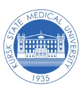
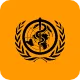
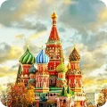
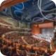
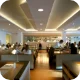

Kursk State Medical University
Founded: 1935
Russia
Founded in 1935, the Kursk State Medical University is a popular medical university in Russia. It is located in one of the oldest Russian cities, Kursk. The KSMU is one of the oldest and the leading medical educational organizations in Russia.
Since the foundation, the medical university has trained over 44 thousand doctors. It is the largest educational institution in the region, having over 9000 thousand medical candidates pursuing the MBBS degree. This medical university is also listed among the best medical universities in Russia.
The MBBS program offered here is approved all over the world. It got approval from NMC, WHO, and other international medical organization. The University has so many professionals that provide the medical education in the country. Kursk University becomes the most popular university to study MBBS in Russia.
Key Highlights
Kursk State Medical University

Founded-1935

Medium of Education-English

Annual Tuition-$4,000/-

Accreditation-NMC, WHO, etc

Admission Criteria-NEET Qualified
Students Graduated–44,000+
Why Choose
Kursk State Medical University?
There are so many factors that attract applicants to choose Kursk State Medical University for MBBS. We have mentioned below some that students can check before admission.

Your MBBS Duration
The university offers a 6 years MBBS program to students. Besides Russia, the medical degree is valid in India.

International Students
The University has over 9000 medical students from 0ver 50 countries and 35 regions studied the medical program from here.
Your MBBS Duration
The university offers a 6 years MBBS program to students. Besides Russia, the medical degree is valid in India.
International Students
The University has over 9000 medical students from 0ver 50 countries and 35 regions studied the medical program from here.
Recognized by
All the medical universities in the country are approved by WHO, GMC, NMC, and other international medical boards.
Accommodation
Kursk Medical University offer lots of accommodations to all medical students. They provide hostel accommodation to international candidates with food.
Cost of living
Kursk city offers some of the lowest living in Russia. Compared to many areas of the country, the city has the lowest costs items i.e. accommodations, food, shopping, etc.
MBBS Fees
The MBBS Fees in Russia at Kursk University is USD 4,000/- yearly that applicants need to pay till the completion of the program.
Ranking
Kursk State Medical University
The Kursk State Medical University Ranking is impressive at the National as well as at the International level. All the ranking presented below is produced from the source, i.e. 4ICU, which is reliable and relatable. We have listed below the latest ranking of the university in the country as well as in the world.

Russia
180

World
4670
Campus Highlights
Kursk State Medical University

Reading Hall
Cafeteria

Sports Ground

Auditorium
GYM

Canteen
KSMU is known for its healthy and vibrant student life. Candidates get a chance to participate in extracurricular activities, various sports events, etc. It also provides students world-class environment full of new opportunities and ideas.
Accomodation
Candidates get all the accommodations near the university campus and also get good public transport.
Canteen and other catering services are available for medical students. Dining rooms and buffets with hot food is available for medical students.
The University arranges music, dance, and other cultural programs for their international medical students.
Sports like table tennis, billiard, rehearsal halls, and musical instruments are available for students.
The university offers a vibrant campus that has world-class facilities for providing a quality medical program with a good life.
Students get modern classrooms with lots of facilities for better teaching. All the class room has inbuilt projectors for live lectures.
Similar Colleges
Similar colleges you might be interested in

Orenburg State Medical University
Estd
Yearly $37,000/-

Perm State Medical University
Estd
Yearly $31,400/-

Chuvash State Medical University
Estd
Yearly $25,700/-
Orenburg State Medical University
Estd1853
Yearly $37,000/-
Perm State Medical University
Estd1853
Yearly $31,400/-
Chuvash State Medical University
Estd1853
Yearly $25,700/-

Crimea Federal University
Estd1853
Yearly $26,000/-
Bashkir State Medical University
Estd1853
Yearly $27,000/-